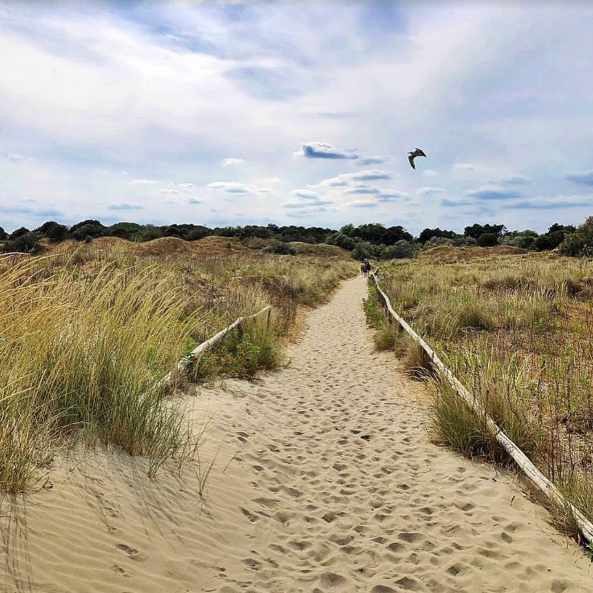
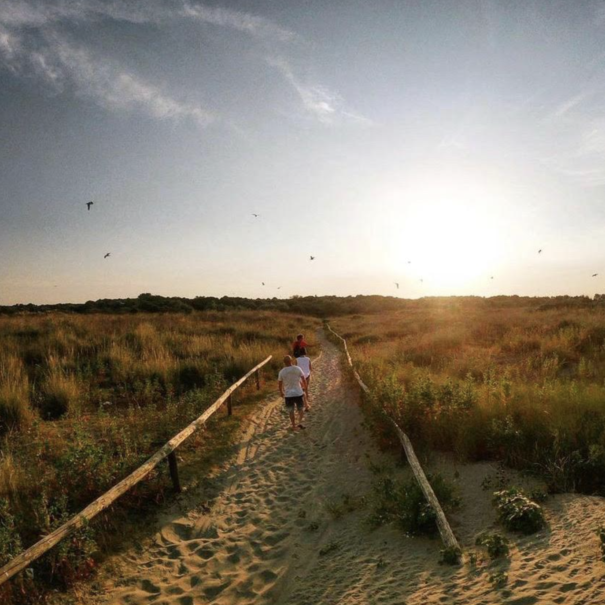

Ca' Roman is probably the quietest places in the island, definitely the best place to spend an afternoon pomeriggio with friends after a barbeque.

Ca' Roman offers some amazing view once you reach the beach and it feels like being in a beautiful adventure avventura .
Ca' Roman is kind of a place with no roules - here in fact you can find dogs cani of all sizes free from their leashes. Simone, in fact, loves to go to Ca' Roman so he can unleash Max, his beautiful bellissimo golden retriever.

Ca' Roman has a lot of paths that go inside the woods and will eventually take you to the beach spiaggia , passing through trees alberi and plants and meeting a lot of different birds.